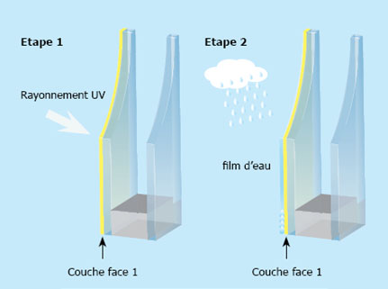

Il y a de multiples applications du verre trempé. C'est aujourd'hui un verre très répandu dans beaucoup de domaines. On a cité l'achitecture dans l'introduction, mais on peut également citer la téléphonie avec les vitres de protection de téléphone, la décoration intérieure avec des tables et des escaliers en verre trempé ou même plus simplement les portes et les fenêtres qui composent nos maisons. Nous avons pris pour exemple d'utilisation les vitres auto-nettoyantes.
Inventée à la fin des années 90, la vitre auto-nettoyante fut créée dans le but de réduire la fréquence de nettoyage des verres de fenêtre. Il permet de dissoudre les éléments organiques qui pourraient se poser dessus et éviter les tâches laissées par les gouttes d’eau.

Elles utilisent deux principes :
La photocatalyse et l’hydrophilie
La photocatalyse permet la dégradation des déchets organiques présents sur la vitre grâce à l’action des rayons ultra-violets à la surface d’un catalyseur, du dioxyde de titane la plupart du temps, présent sur la vitre. Un procédé également utilisé dans l’élimination des odeurs ou la purification de l’air.
L’hydrophilie, quant à elle, provoque une répartition uniforme des gouttes d’eau sur la vitre qui permet d’éviter les salissures liées aux gouttes et de nettoyer les résidus de matière organique laissés par la photocatalyse.
L'intervention de l'homme n'est nécessaire que lors de l'installation du verre. La photocatalyse et l'hydrophilie fonctionnent ensuite seules. C’est ce qui explique l’appellation « auto-nettoyante ». Mais en réalité, au bout d’un certain temps un nettoyage manuel devient nécessaire.